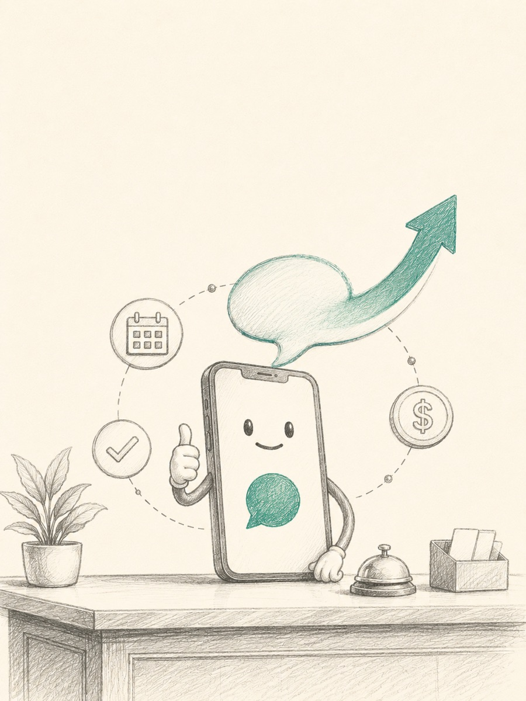
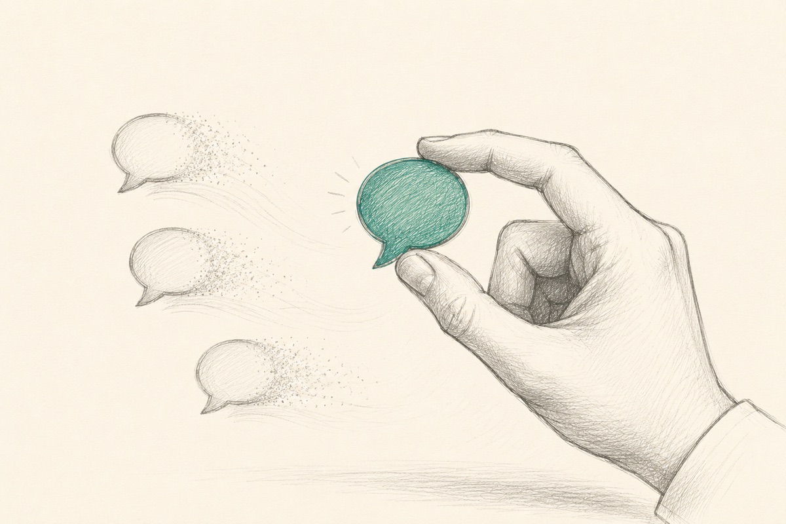
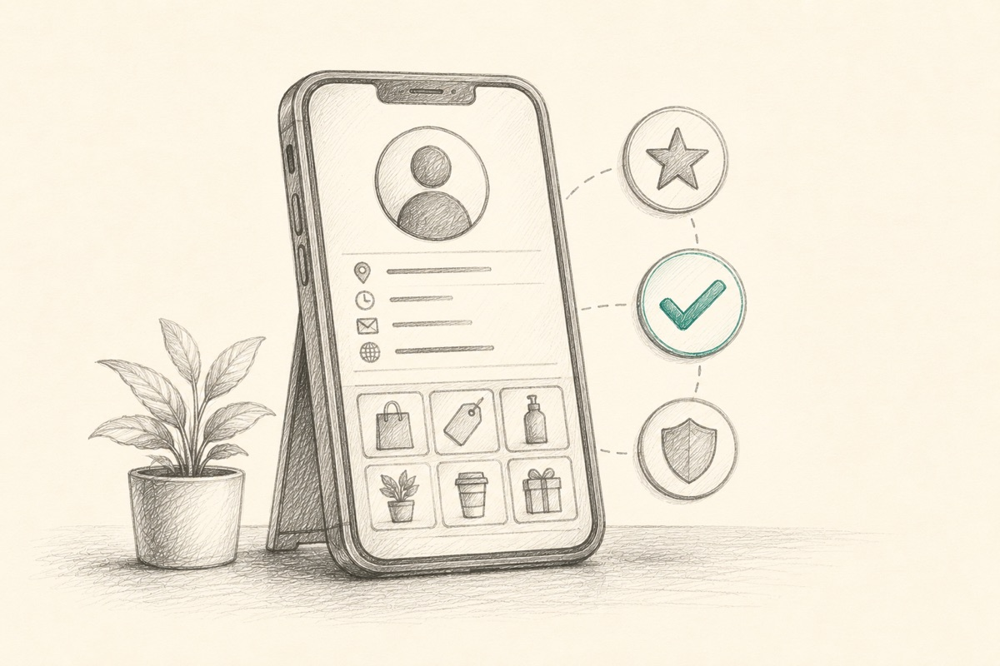
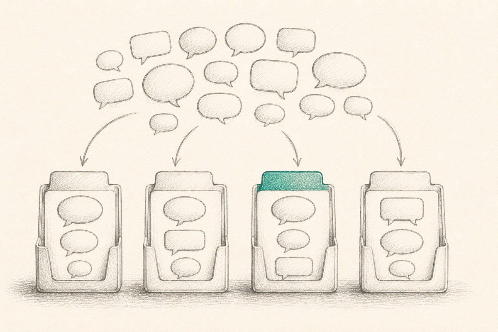
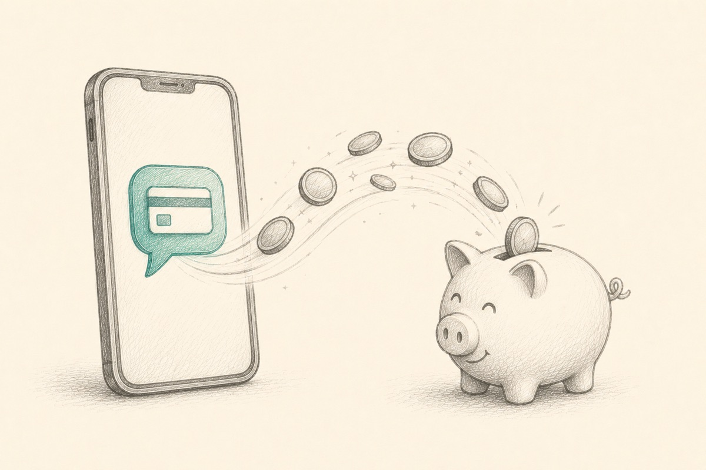
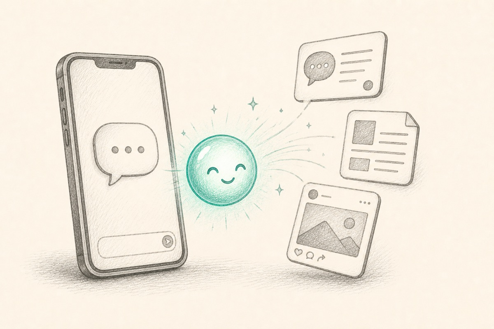

La Guía Práctica — Configura WhatsApp Business Paso a Paso y Empieza a Ganar Más Clientes
Publicado por NKUVO Labs.
Derechos de autor © 2026 Alejandro Soria / NKUVO Labs. Todos los derechos reservados.
Ninguna parte de esta publicación puede reproducirse, distribuirse o transmitirse de ninguna forma ni por ningún medio —incluyendo fotocopiado, grabación, capturas de pantalla u otros métodos electrónicos o mecánicos— sin el permiso previo por escrito del editor, excepto breves citas usadas en reseñas. Este libro digital está licenciado para el uso personal del comprador original y no puede revenderse ni regalarse.
Primera edición.
Aviso legal. Este libro se proporciona únicamente con fines informativos y educativos generales. No constituye asesoría legal, financiera, fiscal o profesional. Aunque se ha hecho todo lo posible por garantizar la exactitud, el autor y el editor no ofrecen garantías respecto a la integridad o exactitud del contenido y no asumen responsabilidad por pérdidas o daños derivados de su uso. Las funciones, precios y pantallas de la app descritas pueden cambiar con el tiempo. Los resultados varían de negocio a negocio; nada en este libro garantiza un resultado particular.
Marcas registradas. "WhatsApp" y "WhatsApp Business" son marcas registradas de WhatsApp LLC y/o Meta Platforms, Inc. "ChatGPT" es una marca registrada de OpenAI, L.L.C. Todas las demás marcas son propiedad de sus respectivos dueños. Este libro es una publicación independiente y no está afiliado, autorizado, patrocinado ni respaldado por WhatsApp, Meta u OpenAI.
NKUVO Labs · nkuvo.com
Introducción — Por Qué WhatsApp Business
Parte 1 — Configura WhatsApp Business
Parte 2 — Ponlo en Práctica
Cierre — Tu Primera Semana
Bonus: Guiones Listos para Usar · La Checklist Definitiva
"Tus clientes ya están en WhatsApp. Este libro simplemente te muestra cómo convertirlo en tu mejor empleado."
Esta es una guía práctica. Hay muy poca teoría — solo los pasos exactos para convertir WhatsApp Business en la herramienta que saluda a tus clientes, responde sus preguntas, los mantiene organizados y te ayuda a cobrar.
Ya sabes que un negocio necesita responder rápido y dar seguimiento. Lo que casi nadie te muestra es cómo lograrlo con la app gratuita que tus clientes ya usan todos los días. Eso es exactamente lo que vas a hacer aquí, pantalla por pantalla.
¿Sabías qué?
Los hispanos son el grupo que más usa WhatsApp activamente en Estados Unidos — más del 56%, muy por encima de cualquier otro grupo demográfico. Para muchos de tus clientes, WhatsApp no es una opción entre varias — es la app que ya usan para todo lo que les importa: la familia en su país de origen, el negocio, los pagos. Encontrarlos ahí elimina la barrera más grande antes de que exista.
Ten tu teléfono a la mano mientras lees. Al terminar, tu WhatsApp Business estará configurado y trabajando para ti.
WhatsApp Business es una app aparte, y es gratis. Esta es la parte que casi nadie explica. No es la misma app que usas para escribirle a tu familia. Es una app distinta —con un ícono distinto— que descargas gratis desde la App Store o Google Play. Te da herramientas de negocio (mensajes de bienvenida, catálogo, listas, respuestas rápidas) que el WhatsApp normal simplemente no tiene. Puedes usarla con el mismo número de teléfono que ya tienes, y tus clientes no notarán ninguna diferencia de su lado — simplemente te escriben como siempre.
| Personal | Business Gratis · este libro | API | |
|---|---|---|---|
| Costo | Gratis | Gratis | Pago por uso |
| Mensajes automáticos | ✕ | ✓ | ✓ |
| Catálogo | ✕ | ✓ | ✓ |
| Respuestas rápidas / etiquetas | ✕ | ✓ | ✓ |
| Automatización avanzada | ✕ | Básica | ✓ |
| Integración con sistemas | ✕ | ✕ | ✓ |
Eso es todo — ya tienes la herramienta. El resto de la Parte 1 trata de activar cada función, una por una.

Antes de que un cliente lea tu primera respuesta, mira tu perfil. Un perfil completo y profesional responde la pregunta silenciosa "¿Puedo confiar en este negocio?" — así que llena cada campo.
Llena cada campo pensando en lo que un cliente quiere ver:
Pon horarios reales para que tus clientes sepan cuándo esperar respuesta — y para que tu Mensaje de Ausencia (Capítulo 3) se active automáticamente.

Dos configuraciones hacen que tu negocio se sienta disponible las 24 horas: un mensaje de bienvenida para chats nuevos y un mensaje de ausencia para fuera de horario. Configúralos una vez y trabajan para siempre.
El mensaje de bienvenida es tu saludo digital. Recibe a cada cliente nuevo antes de que tú siquiera toques tu teléfono.
El mensaje de ausencia mantiene informados a tus clientes cuando estás cerrado — sin culpa por no contestar a medianoche.
Que ambos mensajes suenen cálidos y humanos. Evita frases robóticas como "Su solicitud ha sido recibida." Habla como una persona real que está contenta de ayudar.
Respondes las mismas preguntas todo el tiempo: tus horarios, tus precios, tu dirección, si aceptas tarjeta. Guarda cada respuesta una vez como Respuesta Rápida (atajo), y luego insértala en cualquier chat escribiendo /.
horario o precios (sin espacios)./ seguido del atajo (por ejemplo, /horario), y elígelo de la lista.Empieza con cinco: horario, precios, direccion, cita, y pago (o lo que más te pregunten tus clientes). Si ahorras dos minutos por chat, con treinta chats al día recuperas una hora completa — todos los días.
En lugar de describir tus servicios una y otra vez, arma un catálogo una sola vez y envíalo con un solo toque. Piénsalo como un escaparate digital que vive dentro del chat.
Ponle a cada artículo un nombre específico y una foto limpia. "Promoción Paciente Nuevo — Consulta, Limpieza y Radiografías" vende mucho mejor que "Limpieza."
Cada paso extra hace que pierdas clientes. WhatsApp Business te da un enlace corto y un código QR para que cualquiera pueda iniciar un chat en un solo toque — ponlos en todos lados.
wa.me/1210XXXXXXX) para tu sitio web, anuncios y redes sociales.Pon el código QR en tarjetas de presentación, facturas, el escaparate de tu negocio, tu vehículo y tu firma de correo. Cada escaneo inicia una conversación.
Conforme se acumulan los chats, todos empiezan a verse iguales. Las listas convierten tu bandeja en un pipeline organizado — siempre sabes quién es nuevo, quién está esperando y quién te debe.
Empieza con un pipeline simple y dale a cada conversación exactamente una lista:
Cada mañana, abre primero Seguimiento pendiente y Pago pendiente. Ahí está escondido el dinero de mañana.

La mayoría de los pagos atrasados no son intencionales — el cliente simplemente se le olvida. Facilita el pago poniendo un enlace de pago directo en el chat, y guárdalo como Atajo para tenerlo a un toque de distancia.
pago → Guardar./pago y envía. El enlace se inserta directo — sin buscar nada.Usa el mismo flujo sencillo con cada cliente para que tu flujo de efectivo sea predecible:
Confirma siempre cuando llega un pago ("¡Gracias! Ya recibimos tu pago.") — toma cinco segundos y genera confianza.

Así es como las piezas que acabas de configurar trabajan juntas en situaciones cotidianas. Adapta los mensajes a tu propio negocio.
Un consultorio dental. Una paciente nueva escribe fuera de horario. Tu mensaje de ausencia responde al instante con tu horario y tu número de emergencias. En la mañana envías /precios y el artículo de tu catálogo para la promoción de paciente nuevo. La agregas a la lista Cliente Nuevo, luego a Cita Confirmada cuando agenda. Después de la consulta, envías /pago, luego un agradecimiento y una solicitud de reseña.
Un taller mecánico. Un cliente escanea el código QR de tu taller y escribe "¿Puedo llevar mi coche hoy?" Tu bienvenida lo recibe y le pide la marca y el problema. Envías una cotización, lo agregas a la lista Cotización Enviada, y das seguimiento en dos días. Cuando acepta, cobras un anticipo con /pago.
Una estética o spa. Una clienta pregunta "¿Cuánto cuesta un facial?" Respondes con /precios y tu catálogo. La agendas, envías un recordatorio el día anterior, y después de la cita la invitas a tu promoción de lealtad — todo organizado en listas para que nadie se te escape.
Distintos negocios, la misma caja de herramientas: saluda, responde con atajos, muestra el catálogo, organiza con listas y cobra con un enlace.
Cuando no sepas qué escribir, deja que la IA lo redacte. Abre ChatGPT, describe lo que necesitas, y pega el resultado en WhatsApp — luego ajústalo para que suene como tú y guárdalo como Atajo.
Prompts que usarás una y otra vez:
💡 Tip — Cierra el círculo. Cuando la IA escriba una respuesta que te encante, pégala directo en Herramientas para empresas → Respuestas rápidas para tenerla siempre lista con un atajo. También puedes copiar toda una conversación en ChatGPT y pedirle que te resuma lo que necesita el cliente.
La IA genera; tú decides. Siempre dale una leída rápida antes de enviar — tu personalidad es tu ventaja.

La mayoría de las ventas ocurren después de más de un mensaje, y sin embargo la mayoría de los negocios se detienen después del primero. No necesitas un sistema complicado — solo un ritmo sencillo y las herramientas que ya configuraste.
Después de enviar una cotización, agrega al cliente a la lista Seguimiento pendiente y da seguimiento con un calendario suave:
Que cada mensaje sea útil, no necesitado. Guárdalos como Atajos (/confirmacion, /tip, /ultimomensaje) para que un seguimiento tome un solo toque. Cada mañana, abre tu lista de Seguimiento pendiente y escríbele a todos los que estén ahí. Ese hábito de cinco minutos es donde las ventas olvidadas regresan a la vida.
No tienes que hacerlo todo de una vez. Configura una cosa cada día, y al final de la semana WhatsApp Business estará trabajando de verdad para ti.
Una primera semana sencilla:
Eso es todo. Sin software nuevo, sin personal extra, sin código — solo la app gratuita que ya traes en tu bolsillo, por fin funcionando como debería.
Sigue construyendo. Manténlo simple. Y deja que WhatsApp Business sea tu mejor empleado.
Copia, personaliza y envía. Reemplaza [Nombre del Negocio] con el tuyo.
Bienvenida — ¡Hola! 👋 Gracias por contactar a [Nombre del Negocio]. Cuéntanos cómo podemos ayudarte y alguien de nuestro equipo te responderá en breve.
Ausencia — ¡Gracias por tu mensaje! Nuestro horario de atención es de lunes a viernes, de 9:00 a 18:00 hrs. Te responderemos en cuanto abramos.
Precios — Con gusto te ayudo con los precios. Para recomendarte la mejor opción, ¿me permites un par de preguntas rápidas?
Cita — Nos encantaría agendarte. ¿Qué día te funciona mejor — mañana o tarde?
Seguimiento de cotización — ¡Hola! Solo quería confirmar que recibiste la cotización que te enviamos. Con gusto resuelvo cualquier duda.
Recordatorio de pago — Este es un recordatorio amistoso de que tu factura vence mañana. Aquí está tu enlace de pago: [enlace]. ¡Gracias!
Agradecimiento — ¡Gracias por elegirnos! Apreciamos mucho tu confianza y esperamos poder atenderte de nuevo pronto.
Solicitud de reseña — ¡Nos alegra haberte ayudado! Si te gustó tu experiencia, te agradeceríamos mucho una reseña rápida en Google — ayuda a que más clientes nos encuentren.
Solicitud de referido — El mejor cumplido que nos puedes hacer es recomendarnos con un amigo o familiar. Si conoces a alguien que podría necesitarnos, nos encantaría que nos lo presentaras.
Reactivación — ¡Hola! Hace tiempo que no te vemos por aquí. Solo quería saber si hay algo en lo que podamos ayudarte.
Antes de gastar un solo dólar en publicidad, asegúrate de haber completado esto.
Perfil
Herramientas
Organiza y cobra
/pagoHábito diario
No necesitas hacer todo lo de este libro hoy mismo. Elige un capítulo, configura esa herramienta, y deja que trabaje para ti antes de pasar a la siguiente. En una semana, WhatsApp Business estará haciendo el trabajo de verdad — saludando clientes, respondiendo las mismas preguntas, manteniendo tu pipeline organizado y ayudándote a cobrar — sin que tengas que mover un dedo para cada uno.
Esa es toda la idea: no un equipo más grande, no software nuevo, solo la app gratis que ya traes en el bolsillo, por fin configurada como debe ser.
Gracias por leer — ahora ve y actívala.
Alejandro Soria
Fundador, NKUVO Labs
P.D. — Si esta guía hizo que tu WhatsApp trabajara más para ti, imagina lo que Tappt Business —la plataforma de citas y seguimiento de NKUVO Labs, construida sobre WhatsApp— podría hacer por tu negocio.
Fin del libro.